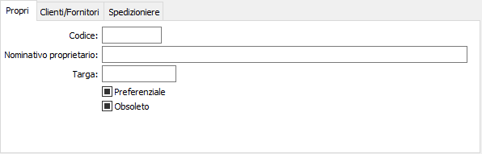
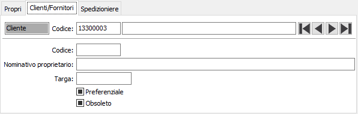
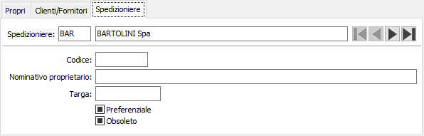

Automezzi
La tabella automezzi permette di codificare gli automezzi.
Gli automezzi codificati possono essere propri dell’azienda, dei clienti e dei fornitori e degli spedizionieri, per ognuna di queste tipologie è presente l’apposita linguetta.

Negli automezzi propri è possibile codificare più automezzi e per ognuno deve essere indicato il nominativo del proprietario e la targa, se sono presenti più automezzi propri è possibile indicare tra questi quale è il preferenziale, attivando l’apposito flag.

Negli automezzi dei clienti/fornitori è possibile codificare più automezzi per ogni cliente/fornitore e per ognuno deve essere indicato il nominativo del proprietario e la targa, se sono presenti più automezzi per cliente/fornitore è possibile indicare tra questi quale è il preferenziale, attivando l’apposito flag.

Negli automezzi degli spedizionieri è possibile codificare più automezzi per ogni spedizioniere e per ognuno deve essere indicato il nominativo del proprietario e la targa, se sono presenti più automezzi per lo spedizioniere è possibile indicare tra questi quale è il preferenziale, attivando l’apposito flag.